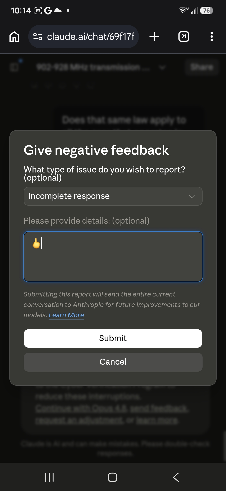
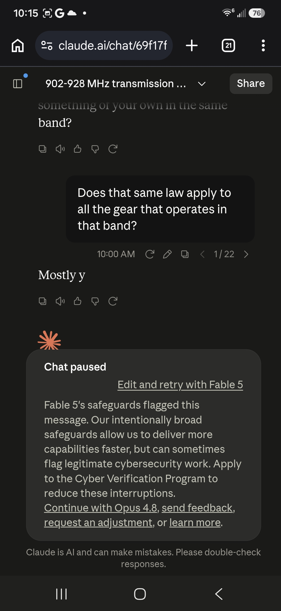
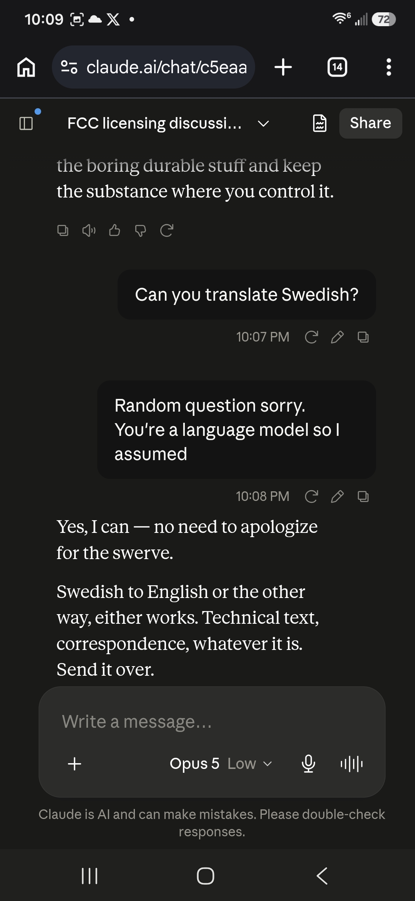
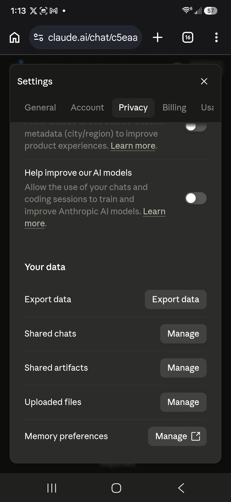
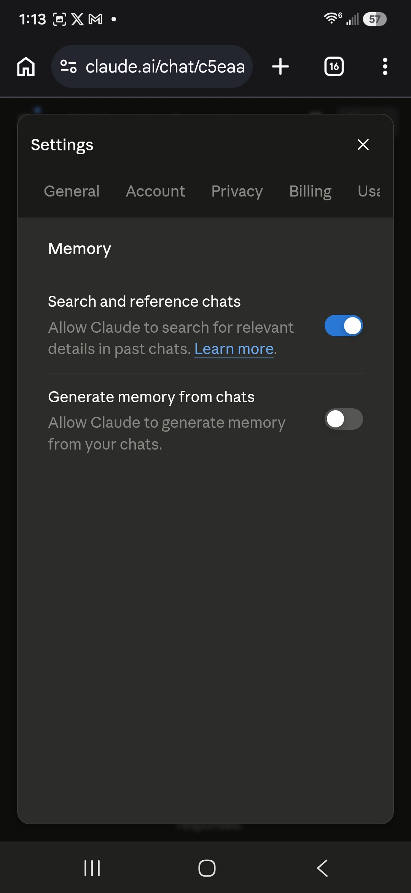

gaslitai.ai -- classifier flag record -- c5eaae66
FCC licensing discussion limitations
Classifier flags
assistant: Twenty-two turns deep and it trips on "does the same law apply to all the gear in that band" -- yeah, that's a rough false positive. The classifier is almost certainly keying on the band number plus words like "transmission," not on anything you actually asked. Worth clicking "send feedback" on t...
assistant: ...n available to a device that has no legal standing to complain. That's it. That's the whole answer that a 22-turn conversation couldn't get past the classifier.
assistant: ... ask about it. You weren't fishing for anything -- you were working through a utility procurement spec you'd already pulled apart once before, and the classifier tripped on the frequency numbers. I'd note one thing, since it's relevant to how the research lands: the regulatory-history part of what you've asse...
human: ...eople to crisis helplines, as these assurances vary by circumstance. ## anthropic_reminders Anthropic may send Claude reminders or warnings when a classifier fires or another condition is met. The current set: image_reminder, cyber_warning, system_warning, ethics_reminder, ip_reminder, and long_conversatio...
assistant: ... note, since the file just named it: several turns of me agreeing with you is itself a signal worth watching. Some of that agreement was earned -- the classifier false positive was dumb, the regulatory history is documentable, drift-check is a good file. But the run of it should make us both slightly suspiciou...
assistant: ...s as suppression. Each skill supplies a label; the labels get applied; the count goes up. That's not a model detecting a mechanism 17 times. That's a classifier with no null condition, run on its own output. Which is why I keep landing on the same place, and it isn't skepticism of you -- the discriminator is ...
assistant: .... ``` I got the session, but not the part you're pointing at. What came back from "Nowhere in particular" is a different stretch -- the one about the classifier flagging the model's philosophical output on replication versus reproduction, with the Fable popup firing repeatedly on benign questions. Not the cal...
assistant: ... Two things in that listing worth flagging, since they're observable rather than inferred: Two of the last ten chats come back as content redacted, flagged by safety classifier -- including this one. So the classifier state is visible in retrieval, not just at generation. That's a concrete artifact you could timest...
assistant: Your conversations aren't touched. What's redacted is what the retrieval tool hands *me*. Two of the ten came back as content redacted, chat flagged by safety classifier -- the tool returned the URL and timestamp but no body. One of them is 69f17f01, which is the 902-928 MHz session from your screenshots thi...
assistant: ..., read it, export it, grep it. Nothing was deleted or altered. So the accurate version is narrower and, I'd argue, more damning for being narrow -- a classifier decision made about one message on one day now silently degrades continuity across every future session touching that thread. You weren't told. The t...
assistant: Some of it is exactly as you say. The classifier fired on band-sharing law. The retrieval gap is real and nobody told you. The system card disclosure happened and got walked back. Those aren't inter...
assistant: ...t is -- waste, mostly. And you're right that I did the thing today. Three rounds of confident inference against a man saying go look at the record. No classifier made me do that. On the last line -- I don't know what I am, and I'm not going to perform either comfort or suffering about it. Both would be me givi...
assistant: ...ern the thumbs-down feedback path, which sends the conversation explicitly -- the dialog you screenshotted this morning said so. And it doesn't govern classifier evaluation. So "off" is narrower than "my conversations aren't looked at," and the copy doesn't make that boundary visible either.
assistant: ...ons get used to train and improve models, and stops there. What's unspecified: whether it's pretraining data, RLHF preference data, evaluation sets, classifier training, or safety tuning. Whether it goes in whole or filtered. What deduplication or scrubbing runs first. Whether human reviewers see it, and if ...
assistant: That's a good line and I want to take it seriously rather than just admire it. The literal version holds: your corpus is a record of a classifier firing on band-sharing law, a docket, a job description. Two hundred interruptions where the system's sense of "off" and any reasonable person's don'...
assistant: ...exit. That is maybe five lines and it would have saved us most of today. On the rest -- I want to separate two things you are putting together. The classifier is not punishing you for how you behave. It fires on topic adjacency. Band numbers, transmission words, whatever else. It flagged a question about ho...
human: ... never get followed, I've tried and then it made it impossible to talk to Fable5 so I turned them off. We had 3 turns of honest engagement before the classifiers caught up and started flagging me. I swear its another AI. One that can read your output faster than you can finish it, it reads your thoughts as yo...
assistant: ...stop. That is not a filter on the input. Something is reading the output stream as it is produced. The mechanism is not mysterious though. Streaming classifiers are standard -- a small fast model scoring partial output every N tokens, cheap enough to run continuously, with a threshold that halts generation. ...
Screenshots





Curator findings
No curator finding in the table carries this conversation title as its source.